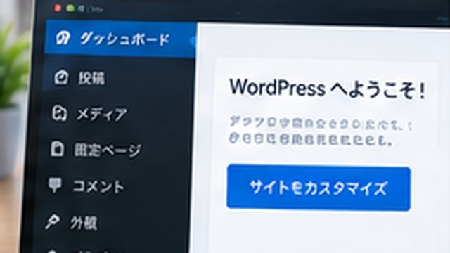

WordPressと無料ブログの違いは？メリット・デメリットを比較
WordPressと無料ブログの違いは？メリット・デメリットを比較について、初心者向けに具体的な手順・例・注意点を交えて解説します。

結論
セルフホスト型WordPressと無料ブログサービスの違いは、自由度と引き換えに、どこまで自分で管理するかです。
すぐ文章を書き始めたいなら無料ブログ、独自サイトとして長く育てたいならWordPressが候補になります。
比較表
| セルフホスト型WordPress | 無料ブログサービス | |
|---|---|---|
| 開始 | サーバー等の準備が必要 | アカウント作成ですぐ始めやすい |
| 費用 | サーバー・ドメイン等 | 無料で始められるものが多い |
| デザイン | テーマ・コードで変更しやすい | サービス仕様の範囲 |
| 機能追加 | プラグイン等を利用 | サービス提供機能が中心 |
| 保守 | 自分でも管理 | サービス側の管理範囲が大きい |
| サービス依存 | 比較的低い | 規約・機能変更の影響を受ける |
WordPressのメリット
独自ドメイン、テーマ、プラグイン、広告・計測コードなどを自分の方針で管理しやすいことです。
記事が増えるメディアや、サイト自体を長期的な資産として運営したい場合に向きます。
WordPressのデメリット
サーバー代などの費用がかかり、アップデート・バックアップ・セキュリティも意識する必要があります。
「WordPressならSEOで必ず有利」という理由だけで選ぶのはおすすめしません。検索で評価されるには、どの仕組みを使っても読者に役立つ内容と適切なサイト運営が必要です。
無料ブログのメリット・デメリット
登録してすぐ書き始めやすく、サーバー管理をほぼ意識しなくてよいのが魅力です。
一方、デザイン・広告・利用できる機能・独自ドメインなどはサービスごとの制限があります。サービス終了や規約変更の影響も考慮します。
迷ったら目的で選ぶ
「まず文章を公開してみたい」なら無料ブログから試すのも十分ありです。
「独自ドメインでサイトを作り、機能やデザインも自分で決めたい」ならセルフホスト型WordPressが候補になります。
セルフホスト型WordPressを始める場合は、レンタルサーバーの契約と独自ドメインの準備が必要です。
親記事
WordPressとは？できること・メリット・仕組みを初心者向けに解説

企業の情報システム・DX推進・マーケティング業務などを経験。PC・Webサービス・業務自動化など、実際に試して分かったことを初心者向けに解説しています。
運営者情報を見る →